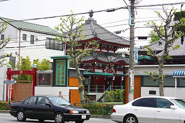

深川えんま堂/東京都江東区
深川の不動様の近くに閻魔堂がある。

この閻魔堂は（詳しいことは知らないよ）最近リニューアルオープンしたらしく奇麗に塗装され直したらしいのだが、何といっても中の閻魔様参拝システムがふるっている。
閻魔様にお参りするのに漠然とお参りしてはならない。
何をお願いするのか、ということを決めてから賽銭箱に小銭（札でもいいじゃないか、という気前の良い方もここでは我慢して小銭にしてくれ。理由は後述）を投入しなければならないのだ。
というのも、ここの賽銭箱は賽銭投入口が10箇所ほどありそれぞれに「家内安全」とか「商売繁盛」とか「学業成就」とかジャンル分けしてあるのだ。
願い事がきまらない人は取り敢えず、適当に小銭を投げ込んでみよう。すると閻魔堂が「起動」するはずだ。
実はここの閻魔堂、投入された小銭を感知して暗い閻魔堂の中がライトアップされ、しかも閻魔様直々の説教が聞けるのだ。
しかも賽銭投入口によってその照明の色や説教の内容が違うのだ。なかには背景の鳥が動くバージョンもあったりしてサービス満点。あるときは赤い照明に照らされた赤閻魔またあるときには青閻魔や緑閻魔と変わるその姿はさながらウルトラマンティガ。
しかしこれだけ派手な閻魔様の割には説教はいたって真面目。
閻魔様というと地獄の番人みたいなイメージがあり、言うことハチャメチャなのかな、などと想像しがちだが、考えてみたら閻魔様ってゆーのは悪いことした人を裁くわけで、いってみれば裁判官みたいなモンなわけだから「正義の味方」であって当り前なんだよなあ。
などと思いつつ、全バージョンを制覇しようと思ったら小銭全部使ってしまった。ちなみに1円玉でも起動確認済です。
ちなみにお隣では「地獄放映中」。
地獄絵に囲まれながらビデオの絵解きを堪能するのもオツなり。
1997.6.
珍寺大道場
HOME